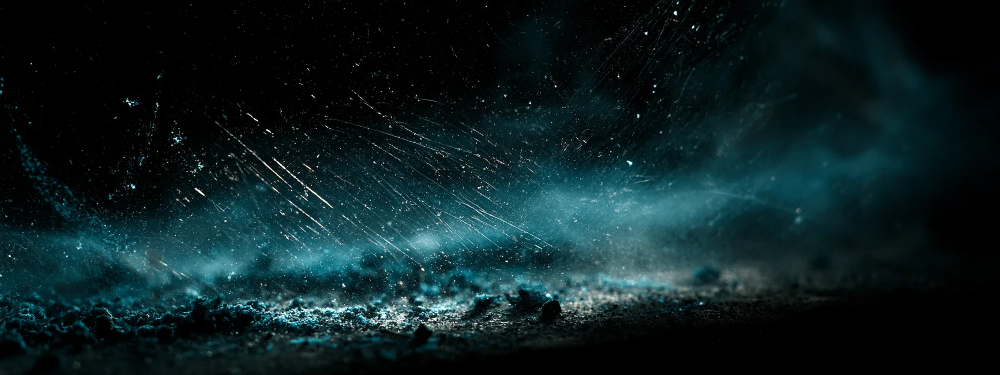
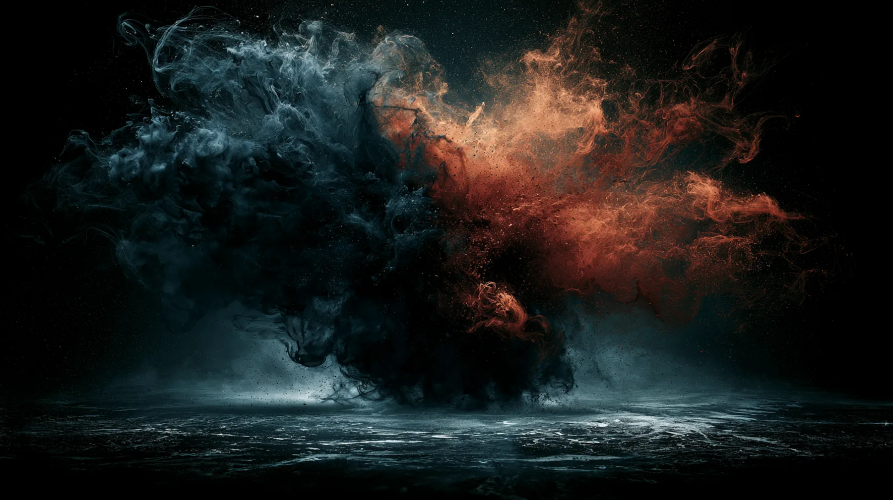
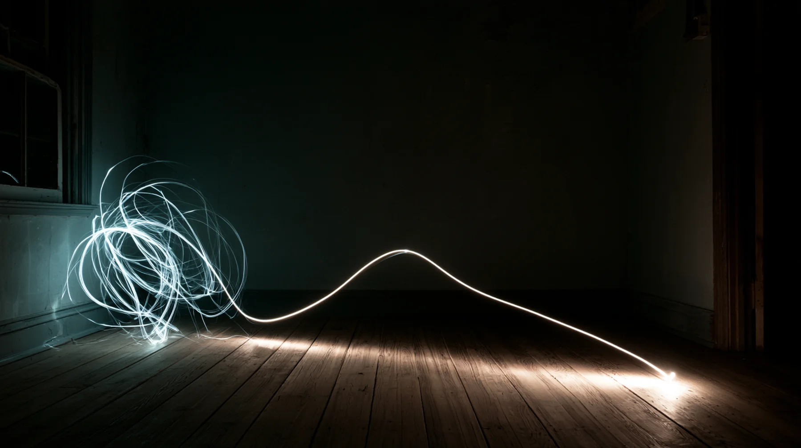
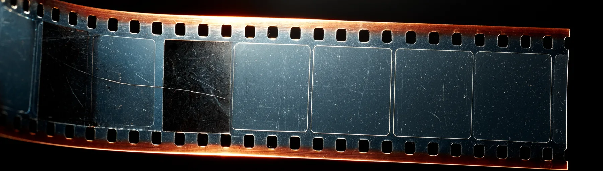
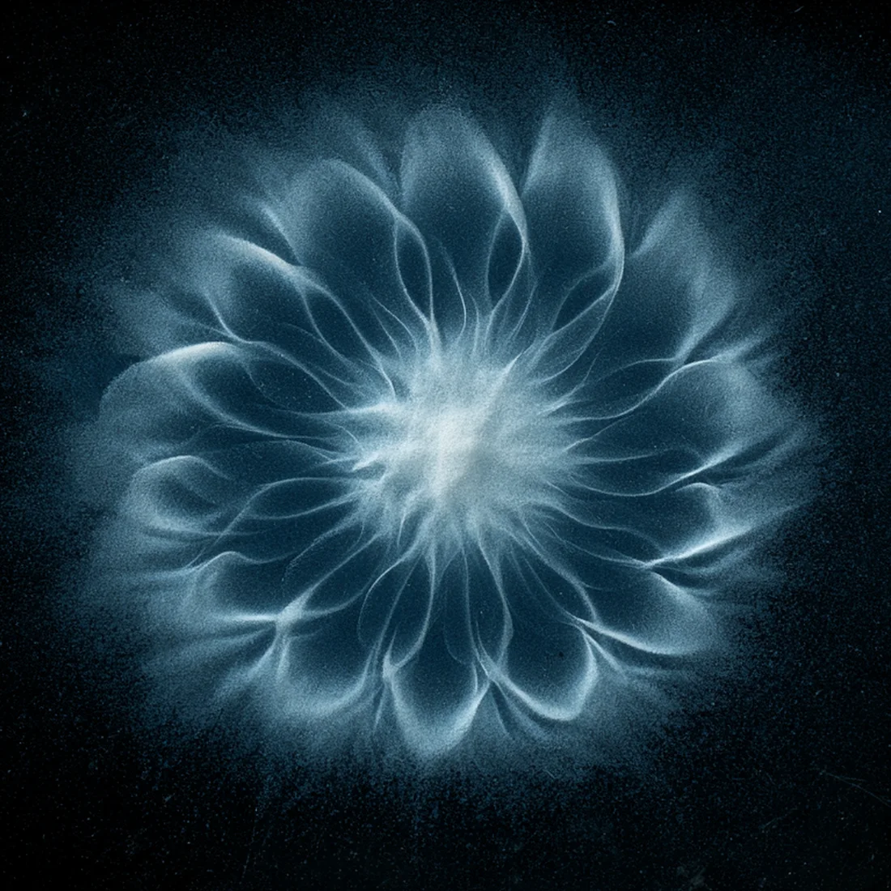
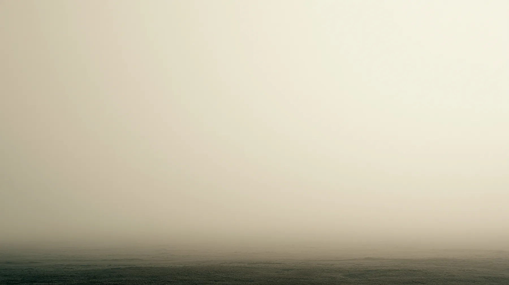

Příběhy PAULUS · Meditace
Zavřené oči. Prázdná hlava. Klid.Zvenčí to tak vypadá. Zevnitř se dál objevují myšlenky, nálady i neklid. Meditace nezačíná prázdnou hlavou. Začíná tím, že si všimnete, jaký vztah k tomu všemu právě máte.
Devět nejčastějších představ
Vyberte každou představu, se kterou jste se už setkali. Po kliknutí se ukáže, co je na ní nepřesné nebo neúplné.

Zbývá devět.
První pohyb · Odstup
Posuvníkem změníte jedinou věc, vzdálenost. Věta zůstane stejná. Sledujte, kdy přestane působit jako hlas, kterému musíte věřit, a začne působit jako myšlenka, kterou lze pozorovat.
Měl jsem to říct jinak. Měl jsem to říct jinak.
myšlenka
Jste uvnitř věty. Působí jako skutečnost.
Nic se neodstranilo. Věta zůstala stejná. Změnil se jen váš vztah k ní. Zblízka může působit jako skutečnost. Z odstupu se ukáže jako jedna z mnoha myšlenek, které se během dne objevují.
Někdy nerozhoduje obsah myšlenky, ale vzdálenost, ze které ji právě vnímáte.
Tady meditace často začíná. Ne odstraněním obsahu, ale změnou vztahu k tomu, co se objevuje.
Druhý pohyb · Kontrola
Zkuste myšlenky vypnout jediným tlačítkem.

„Ten problém není v tom, že myslíme. Problém je v tom, že se s těmi myšlenkami ztotožňujeme.“
Daniel Paulus, Umění meditace
Boj s myšlenkou vytváří další myšlenku. Potlačení není meditace. Je to jen tišší forma téhož zápasu. Praxe antar mauna, tedy vnitřního ticha, jak ji systematizovala satjánandovská tradice, proto nezačíná jejich potlačováním. Učí je zaznamenat, nechat je projít a neztotožnit se s nimi.
Třetí pohyb · Soustředění
Běžný rozptýlený stav a tři navazující stupně podle Pataňdžaliho Jógasúter. Vlevo je pozorující, vpravo předmět meditace. Pohybující se body představují pozornost.
Pozornost skáče
Pozornost se zachytí o mnoho různých předmětů, ale u žádného nezůstane. Přechází od vzpomínky k plánu, ke zvuku, k tělesnému pocitu a k další myšlence.
Koncentrace
Předmět je jeden. Pozornost odchází, ale znovu se k němu vrací. Odbíhání není selhání. Opakované vracení je samotná praxe koncentrace.
Meditace
Proud pozornosti se sjednocuje. Přerušení ustupují a pozornost už není třeba znovu a znovu vědomě obnovovat.
Pohlcení
Vlastní podoba poznávající mysli ustupuje a v popředí zůstává samotný předmět. Rozdělení na pozorujícího a pozorované přestává být středem zkušenosti.
Tradiční model, nikoli měřitelná veličina. Názvy a pořadí vycházejí z Jógasúter III.1 až III.3. Vizuální interpretace je autorská.

Čtvrtý pohyb · Mezera
Myšlení může působit jako jeden nepřetržitý proud. Zpomalte ho a podívejte se, jestli mezi jednotlivými větami opravdu nic není.

Zpočátku jsou předěly téměř nepostřehnutelné. Jedna věta přechází do druhé tak rychle, že obě splynou. Při zpomalení lze někdy zaznamenat okamžik, kdy předchozí myšlenka skončila a další ještě nezačala.
Krátký předěl sám o sobě ještě není svobodou. Může ale vytvořit okamžik, ve kterém si všimnete reakce dřív, než se rozběhne automaticky. Právě tam vzniká možnost jednat vědoměji.
„Není to prázdnota. Je to plnost bez obsahu.“
Daniel Paulus, Umění meditace
Měl jsem to říct jinak.
Zítra to musím stihnout.
Co když to nevyjde.
Zase jsem to odložil.
Pátý pohyb · Nezasahování
Na dvacet vteřin neposouvejte stránku, nedotýkejte se obrazovky a nic nemačkejte.
20
Čeká se

Po dvacet vteřin se nedělo nic nápadného. Jen jste nepřidali další pohyb, podnět ani rozhodnutí.
Tohle ještě není celá meditace. Je to jedna z jejích podmínek, totiž dovolit, aby chvíle nebyla hned zaplněna dalším podnětem. Obtíž často nezačíná u myšlenek, ale u návyku každé prázdné místo hned vyplnit.
Hranice
Co po vás zůstalo
Nic se nikam neodesílá a po zavření stránky záznam mizí. Není to skóre, jen stopa.
Přímá zkušenost · Praxe
Třináct minut vedené praxe. Stránka zhasne a zůstane jen hlas a vaše pozornost. Najděte si sed, ve kterém vydržíte sedět, a místo, kde vás třináct minut nebude nic rušit. Sluchátka nejsou nutná.
Než začnete, ověřte si, že máte zapnutý zvuk a slyšíte hlas.
Otevřená otázka · Pozorovatel
Myšlenku lze pozorovat. Emoci lze pozorovat. Tělesný vjem lze pozorovat.
Kdo je ten, kdo si toho všeho všímá?

Odpověď tady nedostanete. Není to hádanka, kterou lze vyřešit přečtením. Je to otázka, ke které se praxe znovu a znovu vrací a se kterou se sedá.
Kam dál
Autor a zdroje
Text a odborná revize: Daniel Paulus
Lektor meditace, jógové filozofie a hlubinné psychologie. Poslední revize v srpnu 2026.
Tvrzení na této stránce jsou označena jako doložený fakt, tradiční model nebo osobní zkušenost. Stupně pozornosti i praxe antar mauna jsou tradiční modely, nikoli měřitelné veličiny.